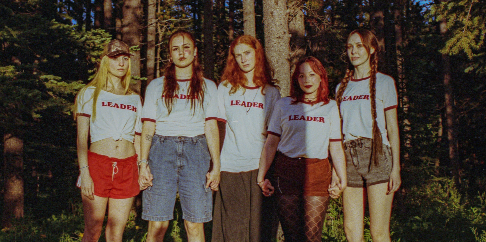
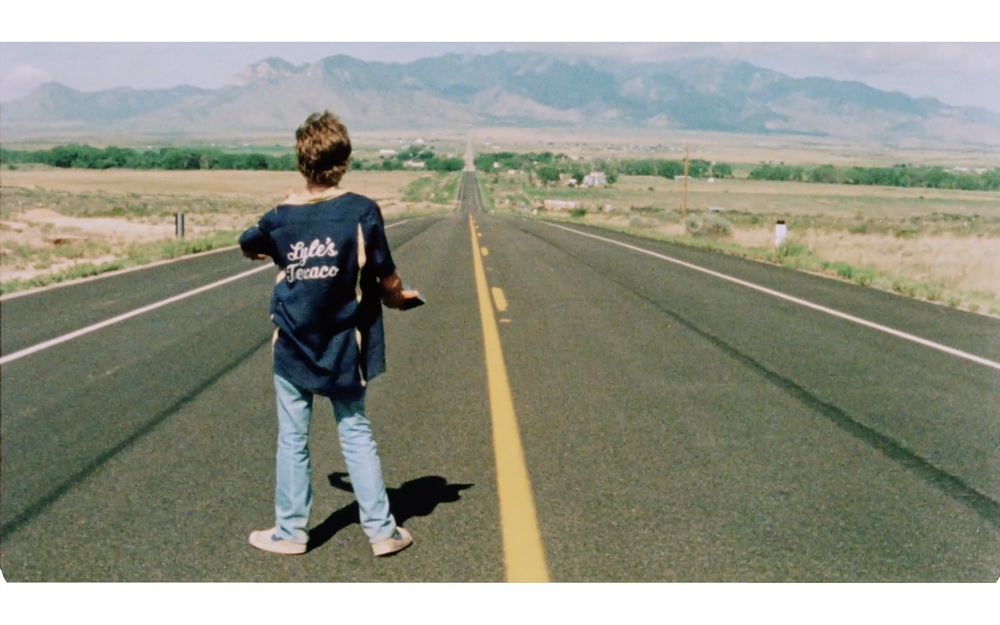

Né d’un amour commun pour le cinéma indépendant nord-américain, day for night est un nouveau rendez-vous cinématographique qui propose des œuvres inédites de la nouvelle garde radicale d’outre-Atlantique : du 20 au 22 novembre au Saint-André des Arts à Paris, une programmation resserrée offre ainsi l’occasion unique de découvrir des films singuliers, parfois expérimentaux voire délicieusement trash, rarement diffusés en France.

Tout juste dévoilé, le programme de trois jours propose six séances et autant de premières françaises : sur les dix films sélectionnés, trois nouveaux longs métrages réalisés et présentés par des talents émergents : Avalon Fast, Jillian Frank, Julian Castronovo ; une séance inédite réunissant la trilogie de courts métrages HEIRLOOM de Dwayne LeBlanc ; et une rétrospective de deux films d’Alexandre Rockwell, dont son premier long, Hero, projeté pour la première fois en France avant sa sortie en salles début 2027. Enfin, les courts métrages de Nathan Silver et Karina Lomelin Ripper feront également leur première française, et viendront compléter cette première édition du festival.

La programmation au complet ainsi que le détail des séances et les liens de réservation sont disponibles dès à présent sur le site web day4night.org.
day for night est fondé par les programmatrices Anastasia Melia Eleftheriou et Chantal Lian. Son nom se réfère à une technique que l’on appelle en français la nuit américaine : tourner le jour pour créer l’illusion de la nuit. Le festival lui aussi existe entre deux mondes, un imaginaire nord-américain et un regard français. Cette première édition a pour thème CONTRADICTIONS : liberté et contrainte, rêve et réalité, certitude et doute, toutes ces tensions que le cinéma indépendant habite sans forcément chercher à les résoudre. La passerelle avec la scène indépendante nord-américaine repose aussi sur une première collaboration avec le LA Festival of Movies, basé à Los Angeles.